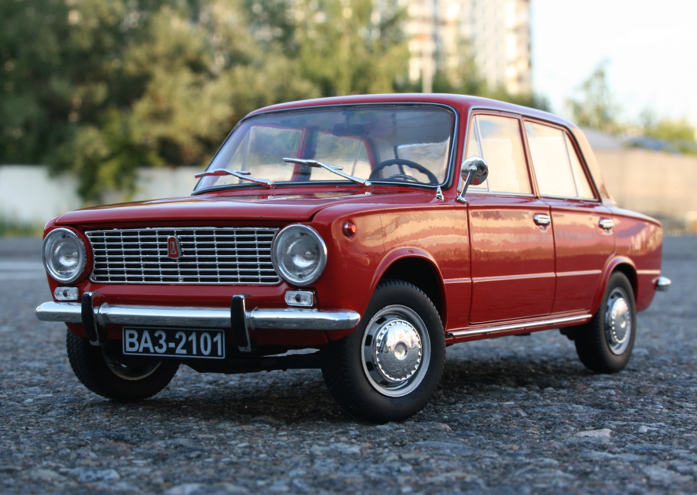

ВАЗ-2101
Фото

Краткая инфо
ВАЗ - копейка мне нравится больше всего.
ВАЗ-2101 («Копейка») — советский заднеприводный легковой автомобиль малого класса с кузовом типа
седан, первая модель, выпущенная Волжским автомобильным заводом. В народе получил прозвище
«копейка» за характерную форму передних фар.
История
Прототипом для ВАЗ-2101 стал итальянский Fiat 124, но советские специалисты адаптировали
автомобиль под советские условия. В конструкцию внесли свыше 800 изменений.
19 апреля 1970 года с главного конвейера сошли первые шесть автомобилей ВАЗ-2101: два синих и
четыре вишнёвых. Производство на постоянной основе стартовало в августе того же года.
Пик выпуска пришёлся на 1973 год, когда было собрано 379 007 экземпляров. На проектную мощность
завод вышел в 1974 году.
Производство оригинальной «копейки» было прекращено в 1983 году (хотя ещё несколько лет
выпускалась её модификация ВАЗ-21013).
История создания: в 1966 году Советский Союз подписал договор с итальянской компанией Fiat о
производстве легкового автомобиля на базе модели Fiat 124. В рамках соглашения был построен
Волжский автомобильный завод (ВАЗ) в городе Тольятти.
19 апреля 1970 года с конвейера сошли первые шесть автомобилей ВАЗ-2101. Производство на
постоянной основе стартовало в августе того же года.
Некоторые характеристики первого серийного ВАЗ-2101:
1,2-литровый бензиновый двигатель (64 л. с.);
4-ступенчатая механическая коробка передач;
максимальная скорость — 140 км/ч;
расход топлива — около 8 л/100 км.
Машина быстро завоевала популярность благодаря надёжности, простоте обслуживания и доступной
цене. На базе ВАЗ-2101 выпускались модификации: ВАЗ-2102 (универсал), ВАЗ-2103 (люксовая версия
с двигателем 1,5 л), ВАЗ-2106 (дальнейшее развитие модели).
Всего с 1970 по 1988 год было произведено около 4,8 млн экземпляров ВАЗ-2101 и его модификаций.
Производство ВАЗ-2101 было прекращено в 1983 году из-за увеличения производства новой модели
ВАЗ-2105.
Конструкция
Усилен кузов, доработанное шасси с увеличенным дорожным просветом.
Установлен двигатель иной конструкции с верхним расположением распредвала.
Задние тормоза заменены на барабанные вместо дисковых.
Передние сиденья — раскладывающиеся в спальное место.
Ручки дверей заменили на травмобезопасные.
Некоторые особенности конструкции машины:
Основа — автомобиль FIAT-124, в конструкцию которого было внесено свыше 800 изменений. В
частности, установили новый двигатель с верхним расположением распределительного вала и
увеличенным расстоянием между цилиндров.
Сцепление — увеличен наружный диаметр фрикционных накладок, а в коробке передач применили более
надёжные синхронизаторы.
 Передняя подвеска — переработана, изменена её кинематика, усилены многие детали, в том числе
пружины и шаровые опоры.
Задняя подвеска — трёхрычажная уступила место более прогрессивной пятиштанговой конструкции.
Рулевое управление — типа «винт—гайка», без усилителя.
Тормоза — дисковые спереди, барабанные сзади, тормозная система также не имеет усилителя.
Кузов — усилен после испытаний на полигоне и обычных дорогах Советского Союза, также увеличен
дорожный просвет.
Передняя подвеска — переработана, изменена её кинематика, усилены многие детали, в том числе
пружины и шаровые опоры.
Задняя подвеска — трёхрычажная уступила место более прогрессивной пятиштанговой конструкции.
Рулевое управление — типа «винт—гайка», без усилителя.
Тормоза — дисковые спереди, барабанные сзади, тормозная система также не имеет усилителя.
Кузов — усилен после испытаний на полигоне и обычных дорогах Советского Союза, также увеличен
дорожный просвет.
Эксплуатация
Некоторые особенности эксплуатации ВАЗ-2101, по словам владельцев:
Поломки. За время владения машиной могут возникать мелкие ремонты, например, замена глушителя,
генератора и шаровых опор. В основном владельцы меняют расходники — масло и фильтры.
Нестабильная работа спидометра. Прибор не всегда показывает нужные показатели при движении,
иногда приходится стучать по приборной панели, чтобы он включился.
Обслуживание. Некоторые владельцы обслуживают машину в собственном гараже, не обращаясь в
автосервис и СТО.
Среди достоинств ВАЗ-2101 называют простоту в ремонте, невысокую стоимость обслуживания,
вместительный салон и багажник. К недостаткам относят шумный двигатель, устаревшую подвеску,
низкий уровень комфорта, слабую безопасность и отсутствие современных опций.
В первые годы ВАЗ-2101 поставлялся в основном в страны СЭВ — так называемый «соцлагерь».
В страны Западной Европы «копейка» начала активно поставляться с 1974 года, когда Fiat 124 уже
сняли с производства на родине.
ВАЗ-2101 поставлялся не только в страны Восточной и Западной Европы, но и в Канаду, Новую
Зеландию, а также некоторые страны Латинской Америки — Боливию, Панаму, Перу и Уругвай.
Награды
Международная премия «Золотой Меркурий» — в мае 1972 года Волжский автомобильный завод получил
её за выпуск модели ВАЗ-2101.
Звание лучшего отечественного автомобиля XX века — в 2000 году ВАЗ-2101 стал таковым по
результатам всероссийского опроса журнала «За рулём».
Участие в спортивных соревнованиях и завоевание наград:
«Тур Европы-71», 1971 год — команда ВАЗ-Автоэкспорт завоевала «Серебряный кубок» в командном
зачёте, а экипажи Гирдаускас-Мадревиц и Лукьянов-Карамышев удостоились наград в личном зачёте.
«Тур Европы-73», 1973 год — команды на ВАЗ-2101 завоевали золотой и серебряный кубки.
Гонка исторических автомобилей на трассе «Нюрбургринга», 2004 год — автомобиль финишировал на
тридцатой позиции в абсолюте и на первом месте в классе.
FHR Historischer Langstrecken Cup, 2010 год — экипаж на доработанном ВАЗ-2101 занял 56-е место в
общем зачёте из 70 автомобилей.
Модель
Модель я взял у Пользователя
1971 Lada Vaz 2101 by Andrasfi Games
У него ещё много таких крутых моделей и я их использую для сайта. Спасибо Andrasfi Games!Ссылка на модель: https://sketchfab.com/3d-models/1971-lada-vaz-2101-f0c95779843542f59744f6f83ebd1c74
Ссылка на Andrasfi Games: https://sketchfab.com/andrasfi1027
Если вы захотите распечатать на 3д принтере:
Ccылка на скачивание модели: https://sketchfab.com/3d-models/1971-lada-vaz-2101-f0c95779843542f59744f6f83ebd1c74#download
Остались вопросы, или Хотите чтото добавить пишите на